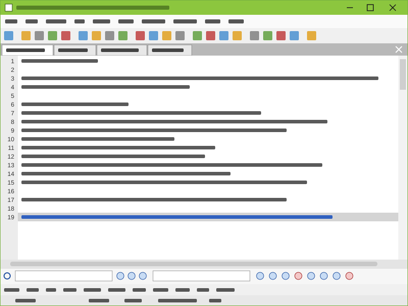

EditPad Lite 8: free Windows text editor, licence rules and official download
EditPad Lite is a small text editor for Windows from Just Great Software. It is free for personal use and costs 24.95 euro per user for work. This guide covers what the editor does, the licence rules and the official download.
EditPad Lite is a Windows text editor from Just Great Software that is free for home and school use that earns no income. Work or business use needs a licence, which costs 24.95 euro for one user before tax. Version 8.6.1 was released on 8 April 2026 and runs on Windows XP through Windows 11.
This site is independent and is not run by Just Great Software. Download and buy buttons lead to the official site editpadlite.com, and some of them may be affiliate links, which does not change the price you pay. Facts and prices were read on the vendor's own pages on 5 November 2026.

What EditPad Lite is
EditPad Lite is a text editor for Windows published by Just Great Software Co. Ltd. The vendor says EditPad has been in continuous development since its first release in 1996, and the current build is 8.6.1 from 8 April 2026. It opens plain text files of almost any origin: Windows, UNIX and classic Mac line breaks, Unicode and a long list of legacy code pages.
The editor keeps each file in a tab, offers unlimited undo and redo that survive a save, and has a search and replace panel with regular expressions. It is the smaller sibling of a paid product, so some tools are held back. The EditPad Lite review goes through what is in the box, and the comparison with EditPad Pro lists what is not.
Pages in this guide
- Download: File name, size, current version, install steps and the route to the vendor's site.
- Review: What the editor does, where it stops, and a score based on the documented facts.
- Pricing: The licence table from the purchase page, user counting rules and upgrade prices.
- Free or paid: Where personal use ends and what a licensed copy adds.
- Lite vs Pro: The feature split between the two editions and the cost of moving up.
- Alternatives: Six other text editors with licence and platform facts.
- Portable install: Help > Create Portable Installation, step by step, for a USB drive.
- System requirements: Supported Windows versions, Linux through Wine and what is not published.
- Refund policy: The three month money back guarantee and the upgrade rules.
Free or licensed
The licence splits by purpose, not by feature count. Home or school use that earns no income is free, with no payment and no registration. Any job or business use needs a paid licence, which also unlocks a spell checker, the user forum and files larger than 2 GB. The page on free versus licensed use draws the line in detail.
A single user licence is 24.95 euro before tax, and volume packages run from 5 to 100 users with a falling price per user. The vendor backs every purchase with a three month money back guarantee. See EditPad Lite pricing for the full table.
Key facts in one table
| Item | Value |
|---|---|
| Current version | 8.6.1, released 8 April 2026 |
| Windows | XP, Vista, 7, 8, 8.1, 10, 11, in 32 bit and 64 bit |
| Installer | SetupEditPadLite.exe, 18 MB |
| Price for personal use | Free, no registration |
| Price for work use | 24.95 euro per user before tax |
| Guarantee | Three months, money back |
| macOS and Linux | No native version; Linux through Wine |
Version 8 supports every desktop Windows release from XP to 11. The vendor publishes no processor or memory figures. Details, including the Wine route for Linux, are on the system requirements page.
How to get it
The installer comes from the vendor only. The download page of this guide lists the file name, size and install steps, then sends you to editpadlite.com for the file itself or for a licence.
Free at home, 24.95 euro at work. One small installer for every text encoding you are likely to meet.
FAQ
What is EditPad Lite?
EditPad Lite is a text editor for Windows published by Just Great Software Co. Ltd. It edits plain text in tabs, with unlimited undo, regular expression search and support for Unicode and many legacy encodings. It is the smaller edition of EditPad Pro.
Is EditPad Lite free?
EditPad Lite is free for personal use, which the vendor defines as home or school use that earns no income. No payment or registration is needed for that. Use for a job or a business requires a licence from 24.95 euro per user before tax.
What is the latest version of EditPad Lite?
The latest version listed on the vendor's download page is 8.6.1, released on 8 April 2026. It fixed a rare crash that was introduced in version 8.5.0, and the vendor advises users of 8.5.x and 8.6.0 to update.
Does EditPad Lite work on Windows 11?
Yes. EditPad Lite 8 supports Windows XP, Vista, 7, 8, 8.1, 10 and 11, in both 32 bit and 64 bit versions. The same installer is used on all of them.
Who makes EditPad Lite?
EditPad Lite is published by Just Great Software Co. Ltd., which also sells EditPad Pro, PowerGREP, RegexBuddy and AceText. The copyright notice on the site names Jan Goyvaerts.
Is there an EditPad Lite for Mac?
No. The vendor offers no macOS version and its pages do not mention running EditPad Lite on a Mac. For Linux it documents running the Windows version through Wine.